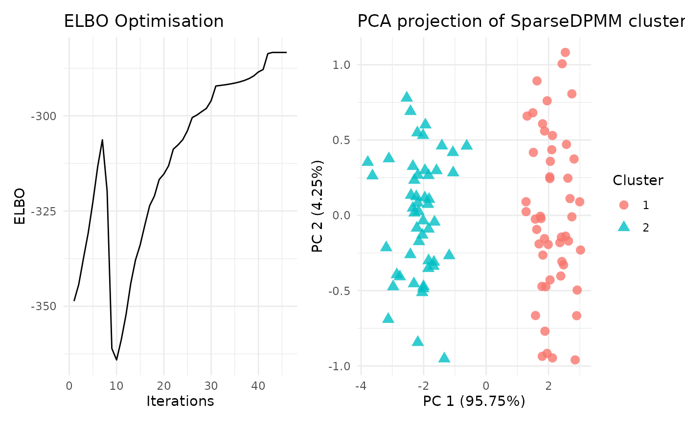

Collapsed variational inference for non-parametric Bayesian mixture models
Source:R/cvi_npmm.R
cvi_npmm.RdCollapsed variational inference for non-parametric Bayesian mixture models
Usage
cvi_npmm(
X,
variational_params,
prior_shape_alpha,
prior_rate_alpha,
post_shape_alpha,
post_rate_alpha,
prior_mean_eta,
post_mean_eta,
log_prob_matrix = NULL,
maxit = 100,
n_inits = 5,
Seed = NULL,
parallel = FALSE,
covariance_type = "full",
fixed_variance = FALSE,
cluster_specific_covariance = TRUE,
variance_prior_type = c("IW", "decomposed", "sparse", "off-diagonal normal"),
...
)Arguments
- X
input data as a matrix
- variational_params
number of clusters in the variational distribution
- prior_shape_alpha
shape parameter of Gamma prior for the DP concentration parameter alpha. Default is 0.001
- prior_rate_alpha
rate parameter of Gamma prior for the DP concentration parameter alpha. Default is 0.001
- post_shape_alpha
initial value for posterior update of shape parameter for alpha. Default is 0.001
- post_rate_alpha
initial value for posterior update of ratee parameter for alpha. Default is 0.001
- prior_mean_eta
mean vector of MVN prior for the DP mean parameters. Default is zero vector
- post_mean_eta
initial value of posterior update for the DP mean parameter
- log_prob_matrix
logarithm of cluster allocation probability matrix. Default is NULL
- maxit
maximum number of iterations. Default is 100
- n_inits
Number of random initialisations if log_prob_matrix and other case-specific hyperparameters are NULL. Default is 5
- Seed
Seeds for random initialisation; either a vector of n_inits integers or NULL. Default is NULL.
- parallel
Logical input for parallelisation. Default is FALSE
- covariance_type
covariance matrix is considered diagonal or full. Default is 'full'
- fixed_variance
covariance matrix of the data is considered known (fixed) or unknown. Default is FALSE
- cluster_specific_covariance
covariance matrix is specific to a cluster allocation or it is same over all cluster choices. Default is TRUE
- variance_prior_type
For unknown and full covariance matrix, choice of matrix prior is either Inverse-Wishart ('IW') or Cholesky-decomposed ('decomposed'). For unknown, full and cluster-specific covariance matrix, choice of matrix prior is either Inverse-Wishart ('IW'), element-wise Gamma and Laplace distributed ('sparse') or element-wise Gamma and Normal distributed ('off-diagonal normal')
- ...
additional parameters, further details given below
Value
[vimixr()] returns a list with the following elements:
alpha: posterior DP concentration parameterCluster number: number of clusters from posterior probability allocation matrixCluster Proportion: cluster proportions from posterior probability allocation matrixlog Probability matrix: log of posterior probability allocation matrixELBO: Optimisation of the ELBO functionIterations: Number of iterations required for convergencePCA_viz: A PCA[ggplot2]plot to visualize the clustering of data based on cluster labelsELBO_viz: A line[ggplot2]plot to visualize the ELBO optimisation
Details
The following models are supported in vimixr, listing their
required input arguments in ... when calling cvi_npmm():
Known covariance
diagonal covariance We need the following additional arguments:
cov_data: a non-negative diagonal matrix, representing the covariance of the dataprior_precision_scalar_eta: a non-negative scalar, representing the precision prior for the DP mean parameterspost_precision_scalar_eta: initial value for the posterior update of precision for the DP mean parameters
full covariance We need the following additional arguments:
cov_data: a positive definite matrix, representing the covariance of the dataprior_cov_eta: a positive definite matrix, representing the covariance prior for the DP mean parameterspost_cov_eta: initial value for the posterior update of covariance for the DP mean parameters
Unknown covariance (Global)
diagonal covariance We need the following additional arguments:
prior_shape_scalar_cov: a non-negative scalar, representing the shape parameter of Gamma prior for the precisionprior_rate_scalar_cov: a non-negative scalar, representing the rate parameter of Gamma prior for the precisionpost_shape_scalar_cov: initial value for posterior update of precision shape parameterpost_rate_scalar_cov: initial value for posterior update of precision rate parameterprior_precision_scalar_eta: a non-negative scalar, representing the precision prior for the DP mean parameterspost_precision_scalar_eta: initial value for the posterior update of precision for the DP mean parameters
Inverse-Wishart We need the following additional arguments:
prior_df_cov: a scalar as the degree of freedom parameter of the Inverse-Wishart prior, Default value D+2prior_scale_cov: positive-definite matrix as the scale parameter of the Inverse-Wishart priorpost_df_cov: initial value for the posterior update of degree of freedompost_scale_cov: initial value for the posterior update of scale matrixprior_cov_eta: a positive definite matrix, representing the covariance prior for the DP mean parameterspost_cov_eta: initial value for the posterior update of covariance for the DP mean parameters
Cholesky-decomposition We need the following additional arguments:
prior_shape_diag_decomp: a non-negative scalar as the shape parameter of Gamma prior for diagonal elements of the Cholesly-decomposed matrixprior_rate_diag_decomp: a non-negative scalar as the rate parameter of Gamma prior for diagonal elements of the Cholesly-decomposed matrixprior_mean_offdiag_decomp: a scalar as the mean parameter of Normal prior for off-diagonal elements of the Cholesly-decomposed matrixprior_var_offdiag_decomp: a non-negative scalar as the variance parameter of Normal prior for off-diagonal elements of the Cholesly-decomposed matrixpost_shape_diag_decomp: initial value for posterior update of the shape parameter for diagonal elementspost_rate_diag_decomp: initial value for posterior update of the rate parameter for diagonal elementspost_mean_offdiag_decomp: initial value for posterior update of the mean parameter for off-diagonal elementspost_var_offdiag_decomp: initial value for posterior update of the variance parameter for off-diagonal elementsprior_cov_eta: a positive definite matrix, representing the covariance prior for the DP mean parameterspost_cov_eta: initial value for the posterior update of covariance for the DP mean parameters
Unknown covariance (cluster-specific)
Inverse Wishart We need the following additional arguments:
prior_df_cs_cov: a vector representing degree of freedom parameters for each cluster-specific Inverse-Wishart priorprior_scale_cs_cov: an array of positive-definite matrices representing scale matrix parameters for each cluster-specific Inverse-Wishart priorpost_df_cs_cov: initial value for posterior update of the degree of freedom parameterspost_scale_cs_cov: initial value for posterior update of the scale matrix parametersscaling_cov_eta: a non-negative scaling factor for covariance matrix of the DP mean parameters
Element-wise Gamma and Laplace prior We need the following additional arguments:
prior_shape_d_cs_cov: a non-negative vector as shape parameters for cluster-specific Gamma priors of the diagonal elementsprior_rate_d_cs_cov: a non-negative matrix as rate parameter for cluster-specific Gamma prior of the diagonal elementsprior_var_offd_cs_cov: a non-negative vector as variance parameter for cluster-specific Laplace priors of the off-diagonal elementspost_shape_d_cs_cov: initial value for posterior update of the diagonal shape parameterspost_rate_d_cs_cov: initial value for posterior update of the diagonal rate parameterspost_var_offd_cs_cov: initial value for posterior update of the off-diagonal variance parametersscaling_cov_eta: a non-negative scaling factor for covariance matrix of the DP mean parameters
Element-wise Gamma and Normal prior We need the following additional arguments:
prior_shape_d_cs_cov: a non-negative vector as shape parameters for cluster-specific Gamma priors of the diagonal elementsprior_rate_d_cs_cov: a non-negative matrix as rate parameter for cluster-specific Gamma prior of the diagonal elementsprior_var_offd_cs_cov: a non-negative scalar as variance parameter for cluster-specific Normal priors of the off-diagonal elementspost_shape_d_cs_cov: initial value for posterior update of the diagonal shape parameterspost_rate_d_cs_cov: initial value for posterior update of the diagonal rate parameterspost_mean_offd_cs_cov: initial value for posterior update of the off-diagonal mean parametersscaling_cov_eta: a non-negative scaling factor for covariance matrix of the DP mean parameters
Examples
X <- rbind(matrix(rnorm(100, m=0, sd=0.5), ncol=2),
matrix(rnorm(100, m=3, sd=0.5), ncol=2))
#for fixed-diagonal
res <- cvi_npmm(X, variational_params = 20, prior_shape_alpha = 0.001,
prior_rate_alpha = 0.001, post_shape_alpha = 0.001,
post_rate_alpha = 0.001, prior_mean_eta = matrix(0, 1, ncol(X)),
post_mean_eta = matrix(0.001, 20, ncol(X)),
log_prob_matrix = t(apply(matrix(-3, nrow(X), 20), 1,
function(x){x/sum(x)})), maxit = 100,
fixed_variance = TRUE, covariance_type = "diagonal",
prior_precision_scalar_eta = 0.001,
post_precision_scalar_eta = matrix(0.001, 20, 1),
cov_data = diag(ncol(X)))
#> outer loop: 1
#> -8.53924660769159-303.267632794874-175.81161747859-183.787706640935322.757259374774
#> outer loop: 2
#> -8.46140365757267-296.222923661769-175.979210082007-183.787706640935320.19751863263
#> outer loop: 3
#> -8.37788985909714-287.665654348118-176.963703152442-183.787706640935319.399929666882
#> outer loop: 4
#> -8.28767991787142-277.60101841962-177.040157213952-183.787706640935315.958901524827
#> outer loop: 5
#> -8.19057837400023-266.649293796392-178.016219174093-183.787706640935314.124216697364
#> outer loop: 6
#> -8.08598884815742-255.404043286644-179.078551451141-183.787706640935312.947373959794
#> outer loop: 7
#> -7.97340756639513-245.455170724464-180.271226683588-183.787706640935311.181140375103
#> outer loop: 8
#> -7.97445205100799-246.785248428357-181.133876993231-183.787706640935299.965289075063
#> outer loop: 9
#> -7.97215018464161-245.646658717972-181.952283663662-183.787706640935258.276469406475
#> outer loop: 10
#> -7.9709582487552-233.62286247817-182.087217188209-183.787706640935243.37994826173
#> outer loop: 11
#> -7.71362843980883-223.045160496432-182.956420132689-183.787706640935238.744866897613
#> outer loop: 12
#> -7.56190411676411-212.885143859229-183.024219693622-183.787706640935235.044197869791
#> outer loop: 13
#> -7.56008272034556-203.876751459683-184.957892754867-183.787706640935236.167691079192
#> outer loop: 14
#> -7.38857159452101-195.531772311037-185.746234865774-183.787706640935234.574712593563
#> outer loop: 15
#> -7.18993687205484-187.62450647156-185.97188590488-183.787706640935230.71982914913
#> outer loop: 16
#> -7.18875193363337-180.358296230776-186.952853334795-183.787706640935229.706686918324
#> outer loop: 17
#> -6.95368920805148-174.068528967913-187.937706291485-183.787706640935229.152176540884
#> outer loop: 18
#> -6.95250962728901-167.932201523541-187.954018409889-183.787706640935225.548116262235
#> outer loop: 19
#> -6.95213433058083-162.280842730934-188.931524515127-183.787706640935225.191514369463
#> outer loop: 20
#> -6.66267385856237-156.456065804673-188.933225738982-183.787706640935220.539356804151
#> outer loop: 21
#> -6.66130518502785-150.432634382186-188.940320182165-183.787706640935216.692641516705
#> outer loop: 22
#> -6.66095226919261-145.036131835263-189.874948419298-183.787706640935216.597002798519
#> outer loop: 23
#> -6.66088175637251-139.386896220006-189.932238690541-183.787706640935212.126124236231
#> outer loop: 24
#> -6.2811354944055-133.789614161104-189.933511756371-183.787706640935207.52007354347
#> outer loop: 25
#> -6.28017160096231-128.528917758757-189.949026820915-183.787706640935204.641639808769
#> outer loop: 26
#> -6.28005319104212-124.306736210647-190.931602866777-183.787706640935204.83113632916
#> outer loop: 27
#> -6.28005283268624-119.761754446653-190.931703830393-183.787706640935200.963453822861
#> outer loop: 28
#> -6.28004652301786-114.777927082278-190.93191616342-183.787706640935196.860556449554
#> outer loop: 29
#> -5.72393293373152-110.30153482419-190.932582024669-183.787706640935192.685128847597
#> outer loop: 30
#> -5.72253070664546-105.869082759374-190.93791812911-183.787706640935190.258839530793
#> outer loop: 31
#> -5.72219364809832-103.909643802412-191.735497767284-183.787706640935192.968789610201
#> outer loop: 32
#> -5.72214621956454-102.490589354719-191.922109244282-183.787706640935191.897436211931
#> outer loop: 33
#> -5.72209239501391-100.831187131199-191.922118807554-183.787706640935190.405005123626
#> outer loop: 34
#> -5.72203118726409-98.8918089637306-191.922131877438-183.787706640935188.664493820931
#> outer loop: 35
#> -5.72196219906305-96.6281786031895-191.922150425777-183.787706640935186.641526256679
#> outer loop: 36
#> -5.72188533762664-93.9904428047002-191.922178169206-183.787706640935184.30116723695
#> outer loop: 37
#> -5.72180112359074-90.9262532050984-191.92222289375-183.787706640935181.614980818622
#> outer loop: 38
#> -5.72171130670807-87.3925812746222-191.922303530979-183.787706640935178.58108930009
#> outer loop: 39
#> -5.72162013737831-83.3960315358924-191.922477440862-183.787706640935175.282694206068
#> outer loop: 40
#> -5.72153687429943-79.1324790914689-191.922992972955-183.787706640935172.064668665912
#> outer loop: 41
#> -4.64682565494178-76.8774817954598-191.925997932516-183.787706640935169.381645579829
#> outer loop: 42
#> -4.64636156482671-75.3372758859366-192.314042073453-183.787706640935172.406498498195
#> outer loop: 43
#> -4.64635866790868-75.337417206486-192.922011703892-183.787706640935173.323974988287
#> outer loop: 44
#> -4.64635866763685-75.3374179635408-192.922011709745-183.787706640935173.323923261076
#> outer loop: 45
#> -4.64635866762835-75.3374179867901-192.922011709925-183.787706640935173.323921610164
summary(res)
#> Length Class Mode
#> posterior 5 -none- list
#> optimisation 3 -none- list
#> PCA_viz 1 ggplot2::ggplot object
#> ELBO_viz 1 ggplot2::ggplot object
#> Seed_used 1 -none- character
plot(res)
